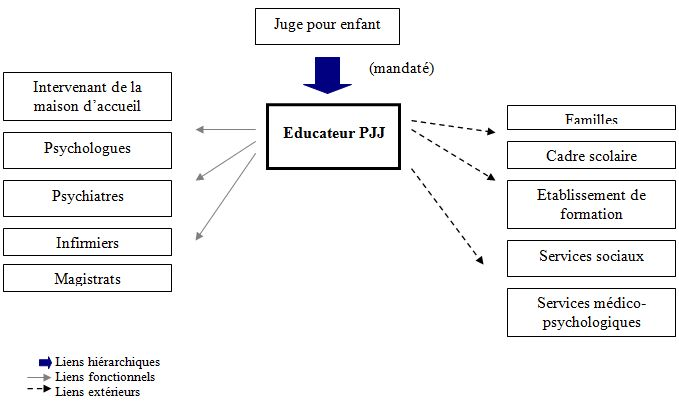
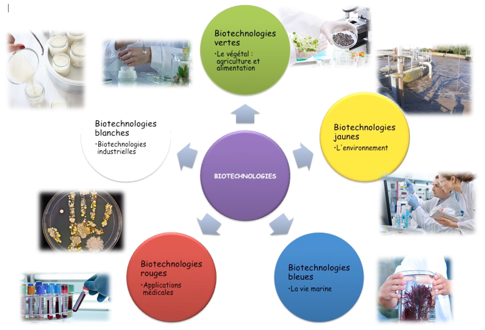

Je suis à l’heure actuelle face à deux avenirs possibles et je ne pouvais pas choisir entre ces deux domaines j’ai donc fait deux parties .
Je porte beaucoup d’intérêt aux matières telles que le Francais, l’Espagnol ou encore la SES . Ce ne sont pas des matières qui me demandent beaucoup d’efforts pour le moment . Le métier d’educateur de la protection judiciaire de la jeunesse , est pour moi un métier important qui demande beaucup de stabilité et de courage où chaque jour peut devenir un challenge, une nouvelle histoires à régler, de nouvelles rencontres avec des enfants, de nouveaux jugements . Et c’est ce côté qui me donne envie de faire ce métier plusieurs années sans m’en lasser . On nous demande très tôt de nous prononcer sur notre avenir . Mes amis, avec qui j’en parle, ont le même avis que moi :se projeter dès maintenant pour toute une vie et se réveiller tous les matins pour un métier ,une profession nous paraît aberrant! Une autre facette du métier qui me plaît est celle de pouvoir venir en aide aux enfants adolescents dans le besoin : j’ai eu pour le moment ce qu’on peut appeler une «enfance parfaite». Des parents unis, une petite sœur, une maison, une vie stable, des amis, une famille qui m’entoure et pour cela, j’aimerais aider ceux qui n’ont pas la même chance que moi.
Sur ce site plusieurs métiers sont évoqués . Je ne sais pas quels métiers je vise en prenant cette filière. Pourtant, j’ai déjà effectué un stage ( en troisieme ) dans un laboratoire d’extraction de plantes . Ce stage m’a beaucoup plu mais je n’arrive pas à m’imaginer plusieurs années derrière une paillasse de laboratoire. Je sais que l’option biotech me plaît: les manipulations , les découvertes . Mais j’ai bien vu durant mon stage qu’une fois le métier choisi, ce sont les mêmes manipulations et les mêmes résultats attendus.Lien du site de l’entreprise de mon stage de troisieme.
lien entreprise evearCette année, j’ai découvert l’option biotechnologies qui a répondu à mes attentes puisque j’aime autant la manipulation, les recherches ainsi que la partie rédaction du TP . Et c’est avec plaisir que je continuerai l’année prochaine .
